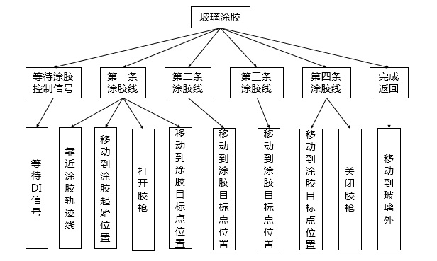
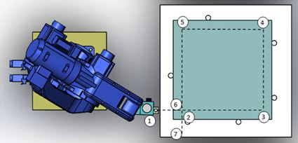

3.2 涂胶编程与操作
3.2.3涂胶运动规划和示教前的准备
1、运动规划
机器人涂胶的动作，可分解成为“等待涂胶控制信号”“打开胶枪”、“涂胶”、“关闭胶枪”等一系列子任务。可以进一步分解为“把胶枪移到第一条轨迹线上”、“胶枪移动到涂胶点”、“打开胶枪”、“移动胶枪涂胶”等一系列动作。涂胶的路径如图3-11所示
图3-11 涂胶工作流程图

图3-12 涂胶工作示意图
2、示教前的准备
I/O配置
本任务中需通过外部I/O信号启动机器人涂胶工作，此外胶枪的打开与关闭也需通过I/O信号控制。
表3-1 I/O配置说明
| 序号 | PLC地址 | 状态 | 符号说明 | 控制指令 |
| 1 | Y | NC | 胶枪打开 | DO[1]=ON |
| 2 | Y | NC | 胶枪关闭 | DO[2]=ON |
| 3 | Y | NC | 涂胶完成 | DO[3]=ON |
| 4 | X | NC | 涂胶启动控制信号 | DO[1]=ON |